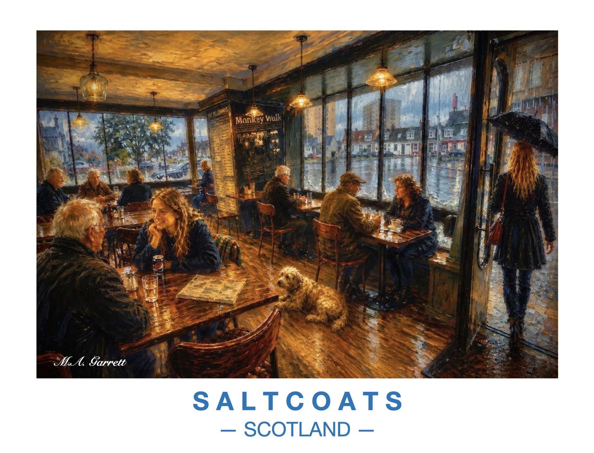

Café on a Rainy Day, Saltcoats
Warm lamplight inside a busy Saltcoats café on a wet day, with a small dog on the wooden floor and rain streaking the windows onto the street.
Paintings of the Ayrshire coast

Warm lamplight inside a busy Saltcoats café on a wet day, with a small dog on the wooden floor and rain streaking the windows onto the street.